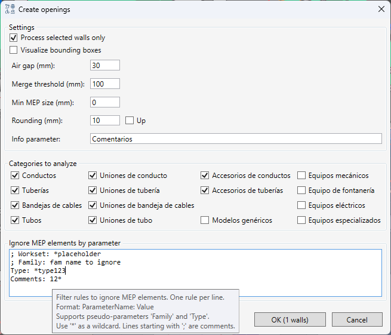

Crear vanos
Tabla de contenidos
 El comando automatiza el proceso de creación y actualización de vanos en muros para el paso de elementos de instalaciones (MEP). Analiza intersecciones, considera los vanos existentes, une los nuevos vanos cercanos y genera un informe detallado de las acciones realizadas.
El comando automatiza el proceso de creación y actualización de vanos en muros para el paso de elementos de instalaciones (MEP). Analiza intersecciones, considera los vanos existentes, une los nuevos vanos cercanos y genera un informe detallado de las acciones realizadas.
Qué hace el comando
- Encuentra intersecciones entre muros y elementos MEP (conductos, tuberías, bandejas de cables, etc.) tanto en el proyecto actual como en los modelos vinculados.
- Gestiona los vanos existentes: En lugar de crear duplicados, el comando puede ampliar o unir los vanos que ya existen en el muro.
- Une automáticamente los vanos calculados cercanos en uno solo para evitar múltiples perforaciones pequeñas.
- Escribe las dimensiones finales de todos los vanos en un parámetro de muro especificado como una lista numerada.
- Se configura de forma flexible a través de un cuadro de diálogo, permitiendo al usuario controlar todos los parámetros clave.
- Crea un informe detallado de todas las acciones realizadas (creación, modificación, eliminación) y lo muestra en una ventana interactiva.

Preparación
Antes de ejecutar el comando, asegúrese de que su vista 3D esté configurada para mostrar todos los muros y elementos MEP que desea procesar.
Uso
Al ejecutar el comando, se abre un cuadro de diálogo de configuración.
- Selección de muros:
- Procesar solo muros seleccionados: Si esta casilla está marcada, el comando solo funcionará con los muros que haya seleccionado antes de ejecutarlo. De lo contrario, se procesarán todos los muros del proyecto.
- El botón OK muestra dinámicamente el número de muros que se procesarán.
- Selección de categorías MEP:
- Marque las casillas de las categorías de sistemas MEP para las que se deben crear vanos.
- Parámetros de vanos:
- Holgura (mm): Un margen añadido a las dimensiones de cada elemento MEP. Aumenta el tamaño final del vano. Por defecto: 30 mm.
- Umbral de unión (mm): El ancho máximo de un tabique entre vanos. Si el espacio entre los bordes de dos vanos adyacentes es menor que este valor, se unirán en uno solo. Por defecto: 100 mm.
- Parámetro para información: El nombre del parámetro de texto en el muro donde se escribirá la lista final de todos los tamaños de vanos. Por defecto: Comments.
- Filtrado y redondeo:
- Tamaño mínimo de elemento MEP (mm): Los elementos MEP cuya dimensión más grande sea menor que el valor especificado serán ignorados. Útil para filtrar elementos pequeños. Por defecto: 0.
- Redondeo de dimensiones (mm): Redondea el ancho y el alto final del vano a un múltiplo del número especificado. Por defecto: 10.
- Hacia arriba (casilla activada): Redondea al múltiplo mayor más cercano (p. ej., 405 -> 410).
- Al más cercano (casilla desactivada): Redondeo matemático (p. ej., 405 -> 400).
- Visualizar Bounding Box para depuración: Crea geometría en el modelo que muestra los cuadros delimitadores de los elementos MEP. Atención: Esta geometría no se elimina automáticamente. Use esta opción solo para depuración y elimine los elementos creados manualmente para no saturar el proyecto.
- Ignorar por parámetro:
- Permite establecer reglas para filtrar elementos MEP. Los elementos que cumplan al menos una regla serán ignorados. Los nombres de los parámetros distinguen entre mayúsculas y minúsculas, pero los valores no.
- Formato: Cada regla en una nueva línea:
NombreParámetro: Valor. - Comodín: Puede usar el símbolo
*para que coincida con cualquier secuencia de caracteres. - Pseudoparámetros: Se admiten
Family(nombre de familia) иType(nombre de tipo). - Comentarios: Las líneas que comienzan con
;se ignoran. - Ejemplo:
; Ignorar todos los elementos en subproyectos que contengan "placeholder" Workset: *placeholder* ; Ignorar elementos con un comentario específico Comment: *ignore*
Resultados
Después de realizar los cálculos, el comando muestra un informe interactivo con los resultados, crea/modifica/elimina vanos en el modelo de Revit y escribe la información final en los muros.
Escritura en el parámetro de muro: En el parámetro de texto del muro, especificado en la configuración, se escribe una lista numerada de los tamaños finales (AnxAl) de todos los vanos ubicados en dicho muro. Ejemplo:
1. 630x480
2. 280x330
3. 70x70
Si no hay vanos en el muro después del procesamiento, el parámetro se borra. Al procesar solo los muros seleccionados, los parámetros de los muros no procesados no se modifican. Este parámetro es útil para crear filtros de vista para mostrar solo aquellos muros que tienen vanos (configurando el filtro con la regla “parámetro no está vacío”).
Formato del informe:
El informe contiene líneas para cada acción en el formato: Acción | ID de Muro | ID de Vano | Descripción
La columna Descripción tiene una estructura de 5 partes:
ID Antiguo | Nuevo Tamaño (AnxAl) | Tamaño Antiguo (AnxAl) | Origen (ID de MEP) | Información de Unión
- CREATED: Se ha creado un nuevo vano.
- Ejemplo:
CREATED | w777 | op888 | | 500x300 | | MEP_IDs: main:1,2 |
- Ejemplo:
- MODIFIED: Se ha modificado un vano existente.
- Ejemplo:
MODIFIED | w778 | op999 | 123 | 600x400 | 500x300 | MEP_IDs: link:3 | Merged with: 456
- Ejemplo:
- DELETED: Se ha eliminado un vano existente porque se ha unido a otro.
- Ejemplo:
DELETED | w779 | op456 | | | | | Merged into: 999
- Ejemplo: